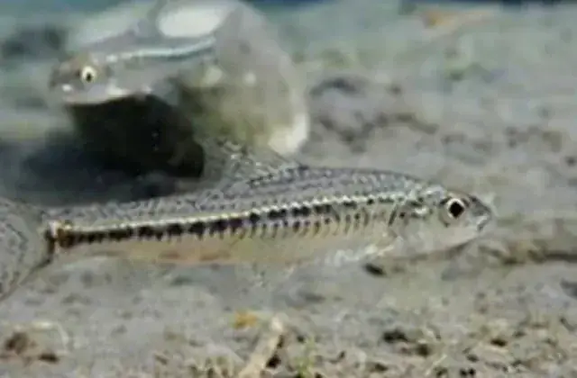
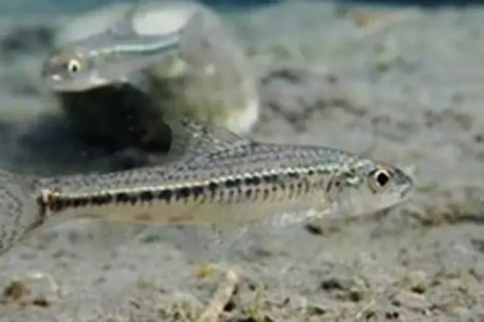
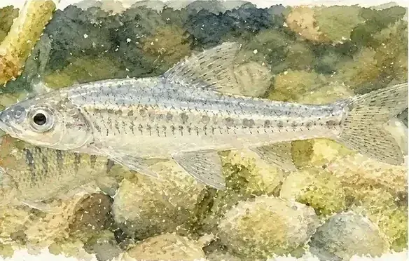

棲地復育與營造
兼顧安全與生態的近自然治理
在河川工程中積極運用多孔隙材料、砌石護岸與植生綠化工法。
為水中生物與岸邊動植物保留多元微棲地，實現河防安全與生態永續並行的願景。
從高山溪澗的清澈流水，到出海口廣袤的水鳥濕地，大甲溪、大安溪與烏溪構成了一條條充滿生機的綠色動脈。
這是一篇三川生態誌的範例文章，展示流域生物多樣性調查、珍稀魚種保護與棲地營造的豐富篇章。

健康的河川不僅承載水流與防洪機能，更是無數野生動植物賴以維生的自然家園。三川生態誌記錄了流域特有魚種、底棲水生昆蟲、河岸植物與鳥類的生命動態，透過長期科學監測與棲地復育，展現人與自然永續共生的和諧景致。
中臺灣的三大河川水系，因高低落差顯著、地質與水文環境多變，孕育了極具代表性的淡水魚類群落。從上游冷冽湍急的岩石深潭，到中下游平緩開闊的砂礫灘地，各種水中生物演化出精巧的生存本領。
透過定期生態調查與水理監測，研究人員記錄了臺灣鏟頜魚、臺灣石𫚈等特有魚種的洄游與產卵路線。水利工程透過保留天然深潭、改良跌水工並設置生態魚道，讓這些溪流精靈能自由自在地溯游繁衍。

河道兩側的高灘地、甜根子草群落與天然次生林，是許多鳥類、兩棲爬蟲類與小型哺乳動物的重要覓食與繁殖空間。每逢秋季芒花盛開之際，銀白色的花浪不僅穩固了河灘地質，更成為冬候鳥南遷時重要的度冬中繼站。
第三河川分署在治理規劃中融入「生態檢核機制」，兼顧河川防洪排砂與綠網維護，保留天然緩衝綠帶，使河川發揮水流通道與生命廊道的雙重功能。

在河川工程中積極運用多孔隙材料、砌石護岸與植生綠化工法。
為水中生物與岸邊動植物保留多元微棲地，實現河防安全與生態永續並行的願景。
認識生態是愛護環境的第一步。三川生態誌收錄了流域內物種調查與棲地故事，期盼引導大眾走出戶外、親近水系，在觀察與探索中體會大自然的奇妙與脆弱。
本篇範例文章呈現了三川生態誌的文章架構與圖文呈現方式，未來將持續擴充各水系的特有物種專題，讓更多人領略河流孕育的豐沛生命力。
河流是萬物的搖籃，給予生命棲息之地，也豐富了我們的家園。